的系数相等。“每一个虚方程仅仅是实量间的两个方程的符号表示。”如果我们按照对实量建立的法则来对复式进行运算，我们得到时常是重要的准确结果。
的系数相等。“每一个虚方程仅仅是实量间的两个方程的符号表示。”如果我们按照对实量建立的法则来对复式进行运算，我们得到时常是重要的准确结果。4．复函数论的基础
高斯还引进了有关单复变函数的一些基本概念。在1811年给贝塞尔的信中(8)，针对贝塞尔的一篇关于对数积分
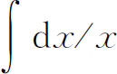
的论文，高斯指出将虚（复）的积分限考虑进去的必要性。然后他问：“当上限为a＋bi时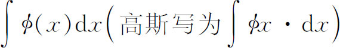
的意义应当是什么？显然，如果要求有清楚的概念，那就必须假定x取小的增量，从使积分为零的x值到a＋bi这个x值，然后将所有的ø（x）dx加起来……但是在复平面上从x的一个值到另一个值的连续过程发生在一条曲线上，所以通过许多条路径是可能的。现在我断言积分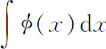
只有一个值，即使是通过不同的路径，只要在两条路径所围的空间内ø（x）是单值的，并且不变为无穷。这是一个很美丽的定理，它的证明并不难，我将在一个适当的机会给出这证明。”高斯没有给出这个证明。他还断言，如果ø（x）变为无穷，那么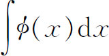
可以有许多值，取决于所取的闭路径围绕ø（x）变为无穷的点一次、二次或更多次。然后高斯回到
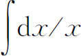
的特殊情形并且说，从x＝1出发，走到某一个值a＋bi，如果路径不包围x＝0，就得出积分的唯一的一个值；但是如果路径包围x＝0，那么就必须对从x＝1到a＋bi不包围x＝0的路径所得之值加上2πi或-2πi。这样，对于一个已给的a＋bi，就有许多对数。随后在这信中，高斯说复变函数的积分的研究应引导到最有趣的结果。所以，甚至在高斯发表他的代数基本定理的第二及第三个证明以前———在其中，像在第一个证明中一样，他避免直接应用复数及复函数，除去偶然一次写出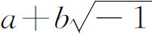
以外———他对于复函数及其积分已有很明确的概念。泊松在1815年注意到并且在1820年的一篇论文(9)中讨论了，沿着复平面上的路径所取的复函数的积分的用处。作为一个例子，他给出了
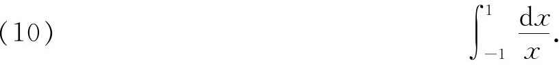
在这里他令x＝eiθ，其中θ由（2n＋1）π变到0，并且将积分作为一个和数的极限处理，得到值-（2n＋1）πi。
于是他指出，一个积分，沿着一条虚路径同沿着一条实路径，其值不一定相同。他给出了例子
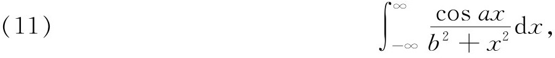
其中a和b是正的常数。他令x＝t＋ik，其中k是常数且是正的，对于k＞b，他得到
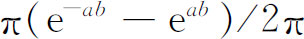
，而当k＜b时，得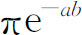
。第二个值对于k＝0也是正确的。所以对于k的两个不同的值（意味着两条不同的路径），就得到两个不同的结果。泊松是第一个沿着复平面上的路径实行积分的人。虽然高斯和泊松的这些观察的确是重要的，但他们都没有发表过较重要的关于复函数理论的文章。这个理论是柯西建立的。1789年，他生于巴黎，于1805年进入多科工艺学校，在那儿他学习工程。由于他的健康情况很差，拉格朗日和拉普拉斯就劝他献身于数学。他担任了多科工艺学校、巴黎大学及法兰西学院的教授。政治对于他的经历发生了意料不到的影响。他是一个热心的保皇党员，并且是波旁（Bourbons）家族的支持者。1830年，当波旁家族的一个远支统治法国时，他拒绝发誓效忠于新君主政体，并且辞去了多科工艺学校的教授职位。他出走到都灵，教了几年拉丁文和意大利文。1838年他回到巴黎，在那里当了几个教会机构的教授，一直到1848年的革命以后的政府废弃了效忠的誓言。1848年柯西主持了巴黎大学理学院（Facultédes Sciences of the Sorbonne）的数学天文学讲座。虽然拿破仑三世在1852年恢复了誓言，但他允许柯西拒绝宣誓。对于皇帝的屈尊姿态，他的回答是捐赠他的薪金给他曾住过的地方索镇（Sceaux）的穷人。柯西是一个令人钦佩的教授和一位最伟大的数学家，他于1857年去世。
柯西具有广泛的兴趣。他熟悉他那时代的诗歌并且是一本关于希伯来（Hebrew）作诗法著作的作者。在数学方面他写的论文超过700篇，仅次于欧拉。他的全集的近代版有26卷，包含数学的一切分支。在力学方面，他写了关于杆和弹性膜的平衡以及关于弹性介质中的波等重要著作。在光的理论中，他研究了菲涅耳（Augustin Jean Fresnel）开创的波的理论及光的散射和极化。他大大地发展了行列式的理论，建立了常微分方程和偏微分方程的一些基本定理。
在复函数理论方面，柯西的第一篇重要论文是他的《关于定积分理论的报告》（Mémoire sur la théorie des intégrales définies）。这篇论文1814年宣读于巴黎科学院。但直到1825年才送去发表，在1827年出版(10)。出版时柯西增加了两个注解，相当可靠地反映了1814年到1825年间的发展和在这个期间高斯的工作的可能影响。现在我们来看一下这篇论文本身。在序言中柯西说，他被引导到这个工作中来，是因为他致力于严密化如下过程中由实到复的过渡，这过程是欧拉从1759年起以及拉普拉斯从1782年起用来计算定积分的值的。事实上，柯西引证了拉普拉斯的工作，后者注意到方法需要严密化。但论文本身并没有处理这个问题，它处理了在流体力学研究中出现的二重积分的更换积分次序的问题。欧拉曾在1770年(11)说过，当积分号下每个变量的限彼此无关的时候，这个次序更换是允许的，至于拉普拉斯，他显然是同意的，因为他屡次用了这个事实。
具体说，柯西处理了关系式
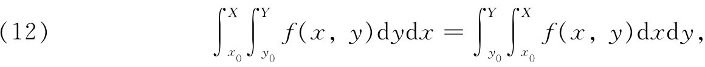
其中
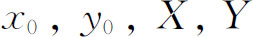
都是常数（图27.4）。当f（x，y）在区域的内部及边界上是连续的时候，这个积分次序更换成立。然后他引进了两个函数V（x，y）与S（x，y），使得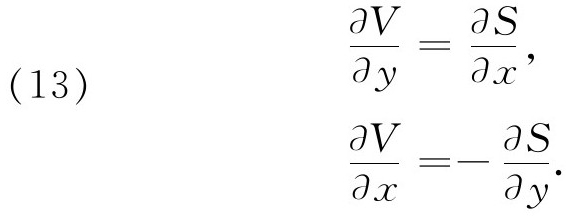
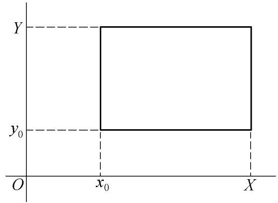
图27.4
欧拉在1777年就已经指出如何得到这样的函数（见参考书目［5］，［8］，［9］）。现在柯西考虑一个由
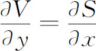
给出的f（x，y）。将（12）的左边f换为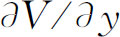
，在右边将f换为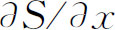
。于是有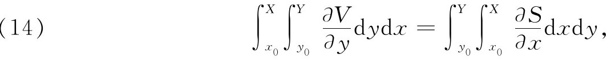
而用（13）中第二个方程，他便得到
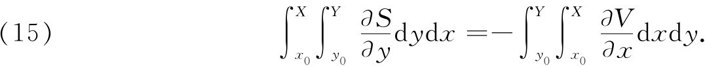
这些等式可以用来在任一次序下计算二重积分的值。不过它们并不涉及复函数。当柯西在他的引言(12)中说，他将“严格地并且直接地建立由实到虚（复）的过渡”时，他心中想的是方程（13）。柯西说(13)这两个方程包含了由实到虚的过渡的全部理论。
上述一切都是在1814年的论文的正文中，而且确实没有明显指出复函数理论怎样被包括在内。另外，虽然柯西按照欧拉与拉普拉斯的同一方式，用复函数来计算实定积分的值，但是这个用法并未把复函数作为基本实体。一直到1821年，在他的《分析教程》（Coursd'analyse）中(14)，他说
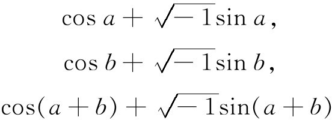
“是三个符号式，它们不能按照一般已建立的常规来解释，并且不代表任何实的东西”。他说，上面的第一与第二式的乘积等于第三式这一事实，并不具有什么意义。为了使这个方程具有意义，必须令实部与的系数相等。“每一个虚方程仅仅是实量间的两个方程的符号表示。”如果我们按照对实量建立的法则来对复式进行运算，我们得到时常是重要的准确结果。
在这本书里他确实处理了复数及复变数
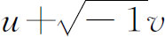
，其中u及v是一个实变数的函数，不过总是这样理解，即两个实的部分是它们的有意义内容。一个复变数的复值函数没有被考虑。在1822这一年，柯西前进了几步。从关系式（14）和（15）他有
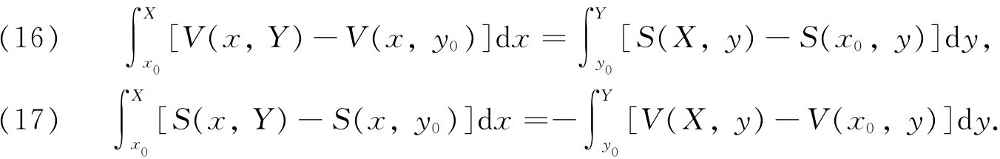
现在他有了可以把这两个方程结合起来的想法，因此做出了关于F（z）＝F（x＋iy）＝S＋iV的一个陈述。例如，他以i乘（16）并将两方程相加，得到
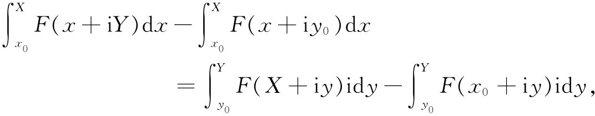
整理后，就给出
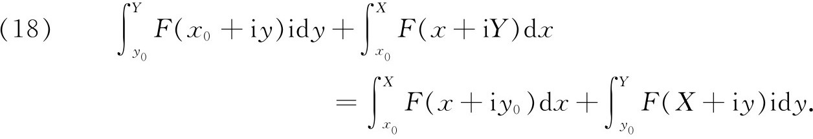
最后这个结果是沿着一个长方形边界（图27.4）的复积分法这一简单情形下的柯西积分定理。这个结果可以表示为
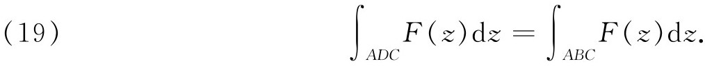
即是说，积分与路径无关。
以上这些想法，是柯西在1822年的一个注解中，在他《关于无穷小计算课程的总结》(15)（Résumédes leçons sur le calcul in finitésimal）中，并且在1827年发表的1814年的论文的一个脚注中给出的。从这些较晚的著作，我们看到柯西是怎样从实函数到复函数的。
1825年，柯西写了另一篇论文《关于积分限为虚数的定积分的报告》，（Mémoire sur les intégrales définies prises entre des limites imaginaires），但这篇文章到1874年才发表(16)。这篇论文被许多人看作是他的最重要的论文，并且是科学史上最瑰丽的一篇，虽然在一段时间内柯西本人并没有赏识到它的价值。
在这篇论文中，他又考虑了将常数及变数用复值代替的方法来计算实积分的问题。他处理了
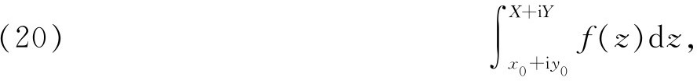
其中z＝x＋iy，并且小心地定义这个积分为和数
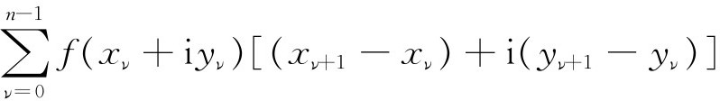
的极限，其中x0，x1，…，X以及y0，y1，…，Y是沿着从（x0，y0）到（X，Y）的路径的分划点。这里x＋iy肯定是复平面上的一个点并且积分是沿着一条复的路径的。他还证明，如果令x＝ø（t），y＝ψ（t），其中t是实的，那么结果与ø和ψ的选择无关，也就是说，与路径无关，条件是在两条不同的路径之间没有f（z）的间断点。这个结果普遍化了对于矩形成立的结果。
柯西正式叙述他的定理如下：若f（x＋iy）对于x0≤x≤X和y0≤y≤Y为有穷并连续，那么积分（20）的值与函数x＝ø（t）和y＝ψ（t）的形式无关。他证明这条定理用了变分的方法。他考虑了一条可供选择的路径ø（t）＋εu（t），ψ（t）＋εv（t），并且证明积分对于ε的第一变分等于零。这个证明并不令人满意。在其中柯西不仅用了f（z）的导数的存在性，而且还用了导数的连续性，但他在定理的叙述中并没有作任何假定。对这一点的解释是，柯西相信一个连续函数总是可微的，而导数只能在函数本身不连续的地方才不连续。柯西的信念是有道理的，因为在他的工作的早期，他和18世纪和19世纪初期的其他的人一样，都把函数理解为一个解析表达式，因而导数立即可以通过惯用的形式微分法则得出。
在1825年的论文中，柯西对于他在1814年的论文中以及在该论文的一个脚注里已经接触到的一个较重要的概念看得较清楚些了。他考虑当f（z）在矩形（图27.4）的内部或边界上不连续时，将发生什么事情。这时沿着两条不同路径的积分的值可能不同。如果在z1＝a＋ib处，f（z）为无穷，但极限
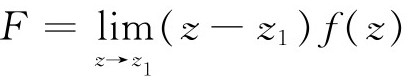
存在，也就是说，在z1处f有一个单极点，那么积分的差是
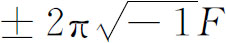
。例如对于函数f（z）＝1/（1＋z2），它在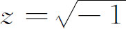
处为无穷，因而a＝0，b＝1，而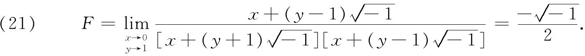
柯西在他的《数学练习》(17)（Exercices de mathématique）中，把量F本身称为积分留数。另外，当一个函数在两条积分路径所围的区域内有几个极点时，柯西指出，必须取留数之和来得到沿着两条路径的积分之差。在这个关于留数的特别的一节中，他的两条路径仍构成一个矩形，但他取了很大的一个，并让边长变为无穷，使所有的留数都包含在内。
在《练习》(18)中，柯西指出f（z）在z1的留数也是f（z）展为z-z1的幂级数展开式中项（z-z1）-1的系数。很久以后，在1841年的一篇论文(19)中，柯西给出了在一个极点的留数的一个新的表达式，即
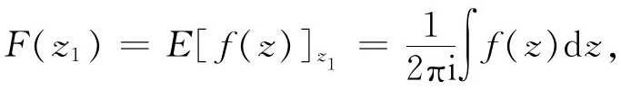
其中积分是沿着一个包含z＝z1的小圆取的。留数的概念及发展是柯西的一个重要贡献。到此为止，他所给出的所有结果的直接应用都是计算定积分的值。
从柯西在他1814年论文的脚注中增加的内容以及1825年杰出的论文中写的东西显然看出，他一定是通过长期而刻苦的思考才认识到，引进复量以后，实函数对之间的一些关系就获得它们的最简单的形式。至于他从高斯和泊松的工作中究竟学到了多少东西那是不知道的。
在1830年到1838年间，当他住在都灵及布拉格时，他发表的工作是不连贯的。在他的《分析与数学物理练习》（Exercices d'analyse et de physique mathématique，四卷，1840—1847）中，他引用了这些工作，且将其中的大部分重新刊入。
在1831年写成的发表较晚的一篇论文中(20)，他得到下述定理：函数f（z）可以按照麦克劳林公式展成为一个幂级数，它对所有这样的z收敛，即z的绝对值小于那些使函数或其导数不为有穷或不为连续的z。（在那时柯西所知道的奇点仅仅是我们现在称为极点的奇点。）他证明这个级数逐项按绝对值小于一个收敛的几何级数，其和数为
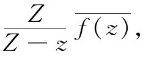
其中Z是使f（z）不连续的第一个值，
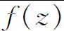
是就所有绝对值等于｜Z｜的z而言｜f（z）｜的最大值。这样柯西就给出了函数可展为麦克劳林级数的一个有力的便于应用的判别法则，它用了一个现在称为强级数的比较级数。在定理的证明中，他首先证明
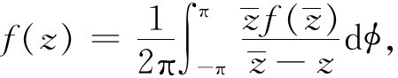
其中
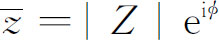
。这个结果实际上就是我们现在所称的柯西积分公式。然后他将分式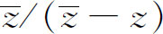
展为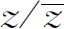
的幂的几何级数并证明了定理本身。在这个定理中柯西还假定了由函数本身的连续性必然推出导数的存在性及连续性。在他把这个材料重新写在他的《练习》中的时候，他曾与刘维尔和斯图姆（Charles Sturm）通信并对以上定理的叙述增加了这样一句话，即收敛区域止于使函数及其导数不再为有穷或连续的z的那个值。但他还是没有确信必须对导数加些条件，而且在后来的工作中他把它们删掉了。
在另一篇比较重要的关于复函数论的论文《关于伸展到一个闭曲线的所有的点的积分》（Sur les intégrales qui s'étendent à tous les points d'une courbe fermée）(21)中，柯西将［解析的］f（z）＝u＋iv沿着一个［单连通］区域边界曲线的积分和展布在这个区域上的积分联系起来。若u，v是x，y的函数，则
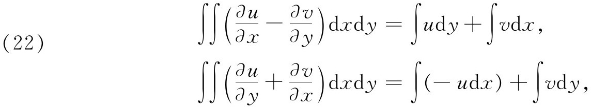
其中二重积分展布在区域上，而单积分沿着边界曲线。现在，考虑到柯西-黎曼方程（见参考书目［13］），左边等于0，两个等式的右边就是出现在
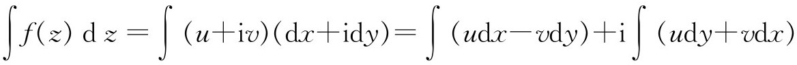
中的积分。所以
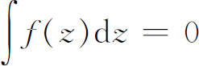
，因而柯西得到了与路径无关的基本定理的一个新证明。他对一个矩形证明了这定理，然后推广到不自交的闭曲线。［这个定理魏尔斯特拉斯（Karl Weierstrass）在1842年也独立地得到。］柯西是否学习了格林（George Green）1828年的工作（第28章第4节）才得到他早期的一些概念的比较丰饶的公式表示，这点是不能肯定的，但这样的征兆是有的，因为柯西将以上结果推广到了曲面上的区域。在以上提到的1846年论文和同一年的另一篇论文(22)中，柯西改变了他对复函数的观点，与他1814年、1825年及1826年的工作相对立。现在他关心的不再是实积分及其计值，而转到复函数理论本身，并为这个理论建立基础。在1846年的第二篇论文中，他给出了关于沿着一条任意闭曲线的积分
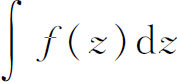
的一个新的叙述：如果曲线包围着一些极点，那么积分的值是函数在这些极点上的留数之和的2πi倍。就是说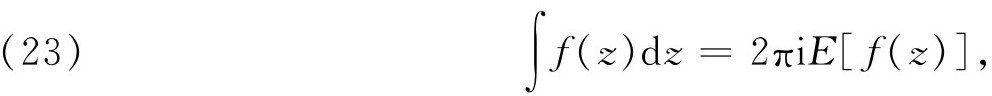
其中E［f（z）］是他用以表示留数之和的记号。
他还着手处理了多值函数的积分(23)。论文的第一部分（其中他处理了单值函数的积分）叙述的内容并不比高斯在给贝塞尔的信中关于
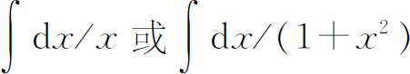
所指出的更多。这些积分确是多值的，而且它们的值与积分路径有关。但柯西更进一步考虑积分号下的多值函数。在这篇论文中他说，如果被积函数是一个代数方程或超越方程的根，例如
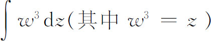
（其中w3＝z），且如果沿着一条闭路径积分并又回到起点，那么被积函数现在就表示另外一个根。在这些情形中沿着闭路径积分的值依赖于起点；而沿着路径的延拓产生积分的不同的值。但若环绕路径充分多次使w回到它的原始值，那么积分的值将重复出现，因而积分是z的一个周期函数。积分的周期模（indices de périodicité）不再像单值函数的情形那样，可以用留数表示了。柯西关于多值函数的积分的概念依然是模糊的。自1821年以后，差不多25年中，柯西单独一人发展了复函数理论。1843年他的同国人才开始继续他的工作。洛朗（Pierre-Alphonse Laurent，1813—1854）单独工作并发表了在1843年得到的一个较重要的结果(24)。他证明，当一个函数在一孤立点上不连续时，就必须用变数的升幂及降幂展开式来代替泰勒展开式。如果函数和它的导数在一个圆环内单值并连续，这个圆环的中心是孤立点a，则函数以相反方向沿着圆环的两个边界圆所取的积分适当展开后就给出z的升幂及降幂的一个展开式，它在圆环内收敛。这个洛朗展开式是
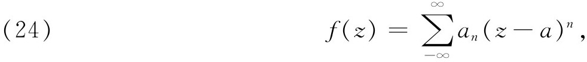
它是泰勒展开式的一个推广。这个结果魏尔斯特拉斯在1841年就已知道，但未发表(25)。
皮瑟研究了多值函数的问题。1850年皮瑟发表了一篇著名的论文(26)，论f（u，z）＝0给出的复代数函数，其中f是u和z的多项式。他第一次搞清了极点与支点的区别（柯西几乎没有觉察到这一点），并且引进了本性奇点（一个无穷阶的极点）的概念，对这个概念魏尔斯特拉斯曾独立地促使人们注意。这样的点可以用
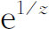
在z＝0作为例子。虽然柯西在1846年的论文中确实考虑了简单多值函数沿着包围支点的几条路径的变化，但是皮瑟也澄清了这个问题。他证明了如果u1是f（u，z）＝0的一个解，而且z沿着某一条路径变化，则u1的最后值并不依赖于路径，只要这个路径确实不包围使u1为无穷的任何点，也不包围使u1等于其他解的任何点（即一个支点）。皮瑟还证明了z的函数在支点z＝a处附近的展开式必须含有z-a的分数次幂。于是他改进了柯西的把函数展为麦克劳林级数的定理。皮瑟得到f（u，z）＝0的解u的一个展开式，它不是展成z的幂而是展成z-c的幂，所以这个展开式在一个以c为中心，并且不含极点或支点的圆内是正确的。然后皮瑟让c沿着一条路径变化，使那些收敛圆部分重叠，并使在一个圆内的展开式可以延伸到另一个圆。这样，从u在一点的值开始，可以沿着任何一条路径了解它的变化。
通过他对于多值函数和它们在复平面上的支点的有意义的研究，并且通过他对于这种函数的积分的创始性工作，皮瑟把柯西在函数论方面的先驱性工作推进到可以称为第一阶段的尽头。多值函数和它们的积分的理论中的困难尚待克服。柯西的确写了关于多值函数的积分的其他论文(27)，在其中他企图跟上皮瑟的工作；虽然他引进了分支切割的概念，但他对极点和支点的区别仍然混淆不清。代数函数及其积分的这个课题要由黎曼来继续进行（第8节）。
在1851年《周报》的另外几篇论文中(28)，柯西给出了关于复函数性质的一些更谨慎的叙述。特别地，柯西肯定了复函数本身及其导数的连续性对于幂级数展开式是必需的。他还指出作为z的函数的u在z＝a处的导数与x＋iy平面上z趋于a的方向无关，且u满足
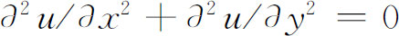
。柯西在1851年的这些论文中引进了新的术语。对于某一区域中z的每一个值，当函数是单值的时候，他用了monotypique或monodrome。一个函数是monogen，如果对于每一个z，它恰有一个导数（即导数与路径无关）。他称一个永不为无穷的、恰有一个导数的、单值函数为synectique。后来布里奥（Charles A．A．Briot，1817—1882）和布凯（Jean-Claude Bouquet，1819—1885）引进了“holomorphic”（全纯）代替synectique，并用“meromorphic”（亚纯）称在区域中只有极点的函数。